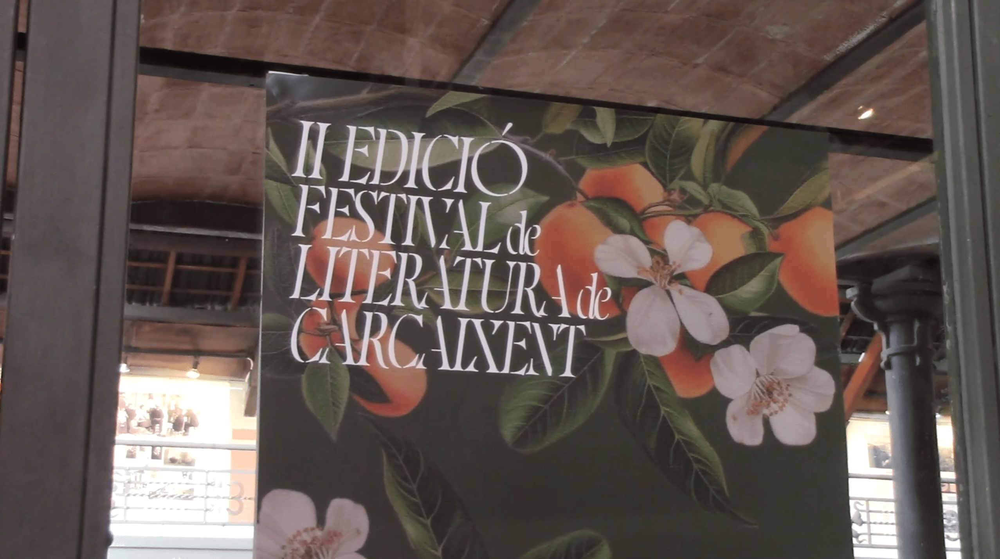
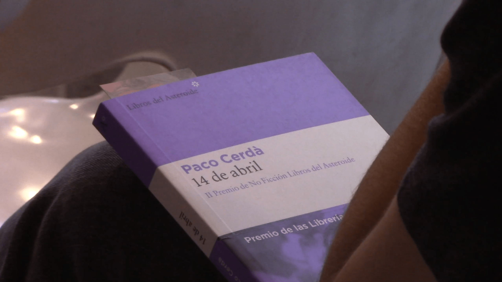
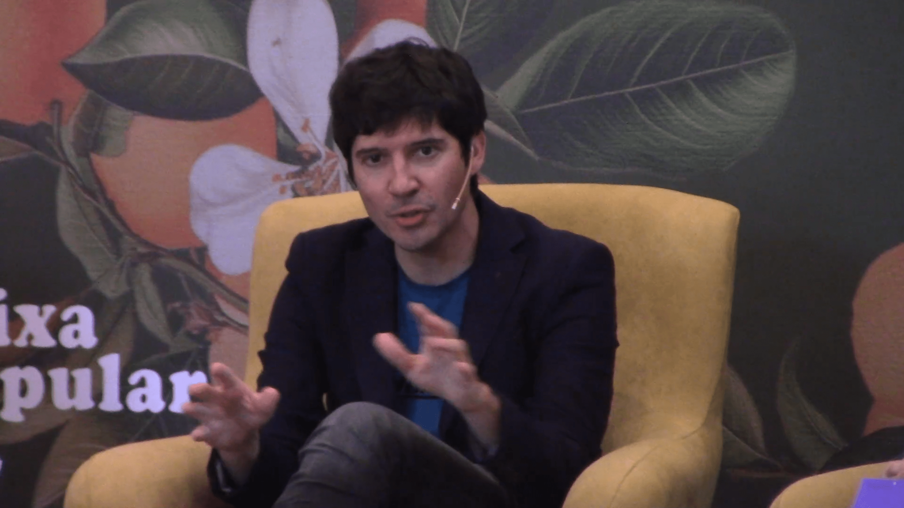
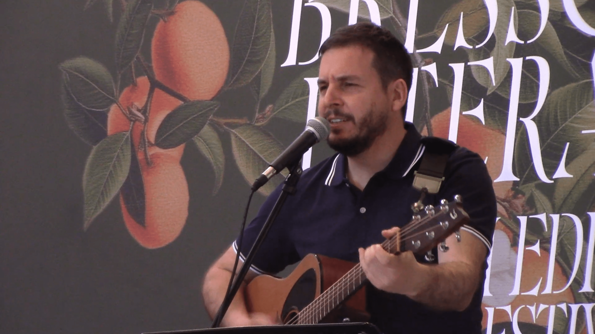
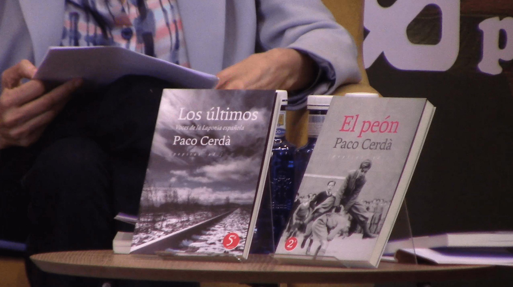

OBJETIVO DEL PROYECTO
El objetivo de este proyecto fue crear un vídeo resumen de la II Edición del Festival Literario de Carcaixent, que se celebró del jueves 11 al domingo 14 de abril de 2024. Con este trabajo audiovisual se buscó mostrar y promocionar en redes sociales el festival de cara a la III Edición de 2025, para lograr que este evento tan especial llegase a más personas y que todos pudiesen disfrutar de las charlas de los autores y autoras, la venta de libros y del resto de actividades culturales que se organizaron.
PROCESO DE TRABAJO
1
Se rodaron los acontecimientos y actividades del festival, la entrada y salida de los asistentes, así
como su participación en los ruegos y preguntas, pero sobretodo el foco se puso en los autores y autoras
invitadas: Nieves Concostrina, Esther López Barceló, Ferrán Torrent, Pau Alabajos, Paco Cerdà...
Se utilizó una cámara Canon digital y portátil sin trípode, para poder ir moviéndose por todo el recinto
sin dificultades. Se capturaron escenas desde distintos planos y se grabaron primeros planos de los rostros de los ponentes,
pero también de los libros presentados, de parte del público, e incluso de la infraestructura del recinto, que
era muy llamativa, ya que el Festival se celebró en el Magatzem de Ribera, un antiguo almacén de naranjas.
Estos fueron los principales lugares y experiencias que se recogieron en el vídeo:
Entrada al recinto
Cartel del Festival
Autores y autoras invitadas
Charlas y ruegos y preguntas
Almacén de Ribera (interior)
Libros en venta
Firma de libros
Reacciones del público
Ambiente acogedor
Concierto de Pau Alabajos
2
Tras el Festival, se recopilaron todos los archivos y se pasaron a un ordenador para comenzar a realizar el montaje. Se seleccionaron los vídeos de buena calidad que incluían planos que podían ser interesantes a la hora de editar. Los defectuosos, innecesarios, o aquellos que salieron pixelados o desenfocados, se descartaron y se archivaron en una carpeta distinta.
3
Se trabajó en la edición del vídeo. La duración aproximada debía ser de 1-2 minutos, así que se trataba de un vídeo dinámico, visual y directo, en el que con unas pocas escenas se consiguiese transmitir la esencia del Festival Literario de Carcaixent. La música que se utilizó fue "Assumiràs la veu de un poble", una canción del artista Pau Alabajos, también invitado al evento.
4
Por último, se compartió el vídeo con los organizadores del evento, ofreciéndoles
varias versiones con distintos planos y enfoques. Estuve en contacto con los responsables del Festival para
matizar algunas escenas y recibir feedback de su parte.
Finalmente, una vez
aprobada la versión final, se publicó en redes sociales para promocionar el Festival Literario con vistas
a la edición de 2025.
PROGRAMAS Y SOFTWARE
Wondershare Filmora
GIMP
GALERÍA DE IMÁGENES




